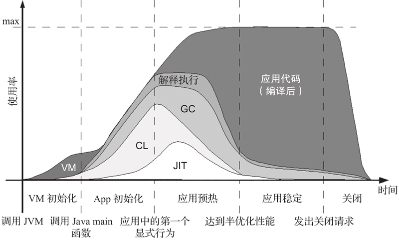
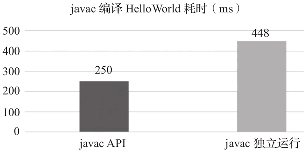
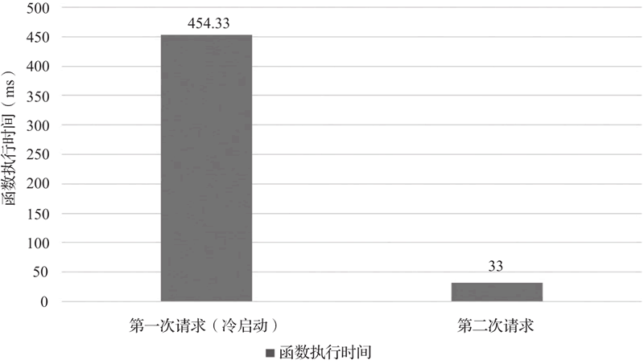
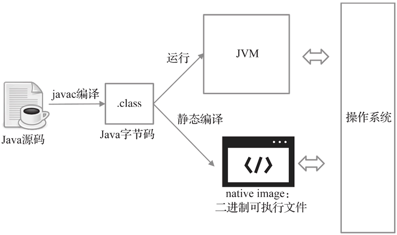
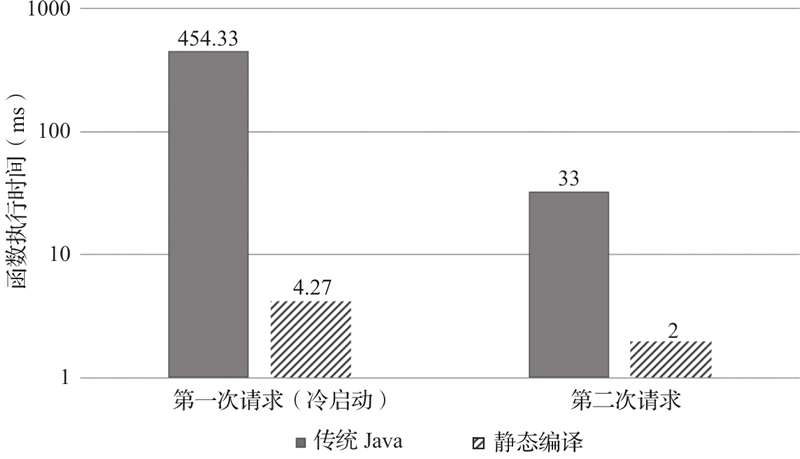

首页 > 编程笔记
Java静态编译技术介绍（超级详细）
经过多年的演进，Java 语言的功能和性能都在不断地发展和提高，但是冷启动开销较大的问题长期存在，难以从根本上解决。
在传统的单机或者服务器部署的场景中，冷启动的问题并不明显，但是在云原生应用的场景中，其负面影响尤为突出。如果应用的冷启动时间超过了其实际执行的时间，还要用户为“不必要”的启动耗时付出费用，用户是难以有良好的使用体验的。Java 语言也因此在 Serverless 场景下无法与 Node.js、Go 等快速启动的语言竞争，落于下风。
在这种背景下，作为能够从根本上解决冷启动问题的 Java 静态编译技术有了用武之地，开始在业界崭露头角，为 Java 语言注入了新的竞争力。
整个 Java 程序的执行生命周期如下图所示，可以分为 VM 初始化、应用初始化、应用预热、应用稳定和关闭这 5 个阶段。
图的横坐标代表应用执行的时间顺序，纵坐标代表 CPU 利用率，各个区域代表该行为的 CPU 使用率，VM 区域代表 JVM，CL 区域代表类载入，JIT（Just In Time）区域代表实时编译，GC 区域代表垃圾回收（以下简称 GC），GC 右上方区域代表解释执行应用程序，最右边的区域代表执行经过 JIT 编译的应用代码。
从图中可以看到各个阶段中花费时间最多的行为是什么，但这里的使用情况并不是按实际比例绘制的，而是只反映整体趋势的示意，因为具体的数据会随应用的不同而变化。
从图 1 可以看到 Java 程序的总体运行生命周期如下：
下面详细介绍 Java 程序执行生命周期的前 3 个阶段，解释 Java 程序是如何启动并逐渐达到性能巅峰的。
VM 初始化会首先调用 JVM 的主函数，也就是我们平时熟悉的 JDK 里的本地可执行文件 $JAVA_HOME/bin/java，以启动 JVM。然后依次在 VM 中执行解析送入的参数、为 JVM 申请内存、创建 Java 主线程、寻找并加载系统类和应用类，以及通过 JNI 调用 Java 程序的主函数等过程。这些步执行的都是 JVM 中的本地程序。
应用初始化是指从 JVM 调用程序主函数的时刻到开始执行应用程序的实际业务代码的时刻之间的各种应用程序内初始化准备工作。比较典型的例子是 Spring 应用，在执行业务代码之前会先初始化 Spring 框架。这个阶段已经开始运行 Java 程序了，会有执行类初始化、GC 和 JIT 等行为。
通过观察一个空程序的执行时间可以直观地感受到 VM 初始化的耗时。我们创建一个名为 Empty 的类，其中仅包含一个内容为空的主函数。以笔者在 Windows 10 内嵌的 Ubuntu 子系统中运行为例，通过执行命令 time java -cp bin Empty，可以看到耗时为 63ms，基本可以认为这就是 VM 初始化的时间。如果需要更进一步了解启动时间的具体分布，就需要使用 debug 版本的 JDK 的 -XX:+TraceStartupTime 选项。
从图 1 中可以看到应用初始化时，类加载最为耗时，因为加载类时需要先从磁盘上读取 jar 文件和 class 文件，然后将文件解析为类。而 jar 文件实际上就是 zip 压缩文件，解压并读取文件的 I/O 操作较为耗时。应用程序越是复杂，初始化时载入类的数量就越多，相应的 JVM 启动时间越长。
JVM 的选项 -XX:DumpLoadedClassList= 可以将 Java 程序载入的所有类都打印到指定文件，我们打开这个选项，分别执行 java -version、Empty 应用和 greeting-service 服务，对比它们的启动时间和加载的类数量可以得到下表。
Java -version 输出当前 JDK 的版本信息，会执行大部分的 VM 初始化流程；Empty 会执行完整的 VM 初始化流程，但是没有任何应用初始化和业务逻辑，这两项的时间统计使用了 Linux 的 time 命令；因为 greeting-service 项因为需要启动 Spring Boot 框架，所以有稍微复杂一些的应用初始化过程，这一项的启动时间是从 Spring Boot 框架输出的日志中获取的，是完成初始化并达到可以接受用户请求的状态的耗时。
这三项的加载类数量是从 -XX:DumpLoadedClassList= 选项打印出的文件中统计出来的。从上表可以明显看出，启动时间随加载类的数量增加而上升。
比如，对于一个简单的加法操作：
解释执行具有平台无关和灵活性两大特点。JVM 解释器输入的是与平台无关的字节码，其指令行为是由 JVM 规范（JVM specification）定义的，从而保证了 JVM 在不同平台上对每个字节码指令的解释总是一致的，因此可以预期解释执行的结果不会随平台变化而产生差异。其灵活性在于可以通过解释执行支持诸如动态类加载这样的动态特性。Java 可以在运行时解释执行一段在编译时尚不存在的代码，这种特性对于编译执行类型的语言来说是难以想象的。
为了解决运行时性能低的问题，Java 引入了实时编译技术，即在运行时将热点函数编译为汇编代码，当程序再次运行到经过实时编译的函数时，就可以执行经过编译和优化的汇编代码，而不再需要解释执行了。
由于编译是在运行时进行的，因此 JIT 编译器可以获得程序的运行时状态，比如路径、热点和变量值。基于这些信息，JIT 编译器可以做出非常激进的编译优化，从而获得执行效率更高的代码。
比如程序中有两个分支，仅静态地看代码无法分辨哪个分支被执行的概率更大，但是如果在运行时发现程序总是只执行其中某一个分支，而不执行另一个分支，那么 JIT 编译器就可以将总是执行的分支放到条件判断的 fallthrough 下，从而节省一次跳转，甚至可以把另一个不执行的分支删除。
万一出错了也没有关系，还可以回退到解释执行。这种有保底的激进优化在一些场景下甚至可以将 Java程序运行时的性能提高到超越 C++ 程序的程度。
现在的 Java 程序基本都是采用解释执行加 JIT 执行的混合模式，当函数执行次数较少时解释执行，而当函数执行次数超过一定阈值后 JIT 执行，从而实现了热点函数 JIT 执行、非热点函数解释执行的效果。
不过既然 JIT 带来了非常显著的性能优势，为什么不全部采用 JIT 方式呢？因为编译优化本身是需要占用系统资源的资源密集型运算，它会影响应用程序的运行时性能，在实践中甚至可能出现过JIT线程占用过多资源，导致应用程序不能执行的状况。此外，如果代码执行的次数较少，编译优化代码造成的性能损失可能会大于编译执行带来的性能提升。
由前面的介绍可知，Java 程序从启动到抵达性能峰值需要经过 VM 初始化、应用初始化、应用预热 3 个阶段，会耗费一定的时间，我们可以将这 3 个阶段的耗时统称为冷启动的开销。
JVM 初始化对应用的启动有多大影响呢？javac 程序可以作为一个良好的实验对象。
javac 程序把 Java 源码编译到字节码的编译器，其本身就是一个纯 Java 应用，所以我们可以将它作为 Java 应用的典型代表。
javac 有两种运行方式：
通过这两种方式启动的编译在功能性上没有任何区别，只有是否需要另外启动 JVM 的区别，所以我们只要分别通过这两种方式使用 javac 编译同一段 Java 程序，然后对比它们的性能数据就可以看到 JVM 初始化开销了。
下图给出了分别用这两种方式编译同一段 HelloWorld 程序源码的耗时对比，左侧条柱为通过 API 调用的耗时，右侧条柱为独立执行方式的耗时。
从图中我们可以看到这两者之间有近 200ms 的差距，可以将其视为 JVM 初始化开销。从这个实验对比中，我们可以说在使用 javac 编译 HelloWorld 时有近 50% 的冷启动开销。
当然对于不同的应用，或者同一个应用的不同工作负载而言，冷启动的开销并不是固定的 200ms 或者 50%。应用和工作负载的不同，JVM 初始化时需要加载的类的数量也会不同，类越多耗时越长。工作负载越大，工作本身的耗时越长，冷启动开销所占的比重就越小；工作负载本身的耗时越小，冷启动开销的问题就越突出。
由于一般的 Serverless 应用自身的工作负载较小，因此冷启动的开销问题就显得尤为突出。而除了 JVM 初始化外，Serverless 应用的冷启动中一般还包含服务框架的初始化，这也会对冷启动造成更显著的影响。我们可以通过 greeting-service 的例子直观地了解冷启动开销对应用程序的影响。
当 greeting-service 服务启动后，该服务会接受用户发来的 greeting 请求并返回计数值和一个固定的字符串，具体返回值如下所示。
从图 3 可以看到，第一次请求和第二次请求之间存在着十几倍的巨大差异，除了 VM 初始化的冷启动开销外，时间主要消耗在应用初始化，即初始化 Spring Boot 框架上。在用户发起第一次请求之前，计算函数平台上并没有可用的 greeting-service 服务。当收到用户的首次请求时，函数计算平台才会初始化 JVM，启动 greeting-service 的 Spring Boot 框架和应用服务，然后才能响应用户的 greeting 请求。当 greeting-service 的服务经过冷启动准备后，对第二次及以后的请求的响应就会非常快。
上述的冷启动问题在传统的将应用部署在自建服务器场景下同样存在，但是影响并不明显，因为应用服务提供商可以在自己的服务器上提前启动好应用程序，为其做好充分的预热并保持其时刻处于待命的状态，以便当客户的访问请求到来时提供最好的服务响应。但是在 Serverless 云计算场景下，由于以下几点原因，冷启动问题会表现得格外突出。
Serverless 服务本身执行时间短。Serverless 应用强调微服务架构，服务的粒度小，耗时短。与短暂的应用执行时间相比，冷启动的开销耗时所占比重增大，甚至可能比程序执行时间还要长，因此冷启动对应用的影响也到了不可忽视的程度。
Spring Boot 等框架启动时间长。Spring Boot 应用在启动时要扫描所有代码并注册 bean，启动时间与代码量成正比。
Serverless 服务会变“冷”。云计算的一大特点是按需使用，当不再有新的使用需求时，云服务会在执行完用户的最后一次请求后的一段时间关闭，此后的第一次服务请求会再次遭遇冷启动问题。
预热需要额外的费用花销。当前各个云服务提供商对冷启动问题的解决方案是提供付费预热，应用服务提供商可以购买预热服务提前将自己的服务启动起来，或者通过在服务变冷后定时唤起的方式，让自己的应用保持一定的热度。这就要求应用服务提供商对其用户的使用模式有较为准确的预测，能够在恰到好处的时候预热程序，否则就会多付出不必要的费用。
服务扩容时又会面临冷启动。当服务请求数量激增时，云服务提供商会为服务进行弹性扩容，但是新扩容的服务还是会冷启动，被分流到冷启动应用上的请求的响应时间就会上升，从而不能为用户提供最佳的体验。
由此可见，冷启动问题已经是 Serverless 云原生应用必须面对的重大挑战，业界也提出了多种提高 Java 启动速度、降低冷启动开销的方案，比如将通用类的数据保存下来并在不同 Java 进程之间共享，以提高启动速度的 AppCDS（Application Class Data Sharing）技术，就是 OpenJDK 社区提出的一个解决方案。但是由于冷启动问题的本质是由 JVM 初始化、启动时的类加载、程序的解释执行以及 JIT 编译开销等 Java 基础性技术综合造成的，所以在传统 Java 的体系下无法彻底解决。
近年兴起的 Java 静态编译技术就彻底解决了Java语言的冷启动问题，还因为打破了 Java 语言与本地代码（native code）之间的界限，为 Java 世界解锁了更多的特性。
Java 静态编译是指将 Java 程序的字节码在单独的离线阶段编译为汇编代码，其输入为 Java 的字节码，输出为 native image，即二进制 native 程序。“静态”是相对传统 Java 程序的动态性而言的，因为传统 Java 程序是在运行时动态地解释执行和实时编译，所以静态编译需要在执行前就完成程序的编译。
静态编译的基本原则是封闭性假设（closed world assumption），要求编译器在编译时必须掌握运行时所需的全部信息，换句话说，就是运行时不能出现任何编译时未知的内容。这是因为应用程序的可达范围在静态编译时被限定了，因为没有了类加载器、解释器等组件，不能在运行时解析和执行任何动态引入的类。
Java 静态编译执行模型和传统执行模型的对比如下图所示。
首先将 Java 源码用 javac 编译为字节码表示的 class 文件，无论传统的执行方式还是静态编译都需要以字节码作为输入。从字节码开始，传统的 Java 执行模型就会按图 4 中的右上部分进行，直接在 JVM 中执行 Java 的字节码，由面向不同平台的 JVM 负责与操作系统的具体交互过程。而静态编译执行模型则按图 4 的右下部分进行，该部分增加了编译阶段，先由静态编译器将应用程序字节码以及运行时支持代码编译为平台相关的本地二进制可执行文件，然后执行。
使用本书要介绍的主角 GraalVM 静态编译后得到的本地文件被称为 native image，它是一个自举的可执行文件。“自举”是指执行 native image 时除了操作系统的库文件之外，不需要其他任何库文件和运行时的支持，因为 native image 中已经包含了应用程序、依赖库程序及运行时支持程序（如多线程支持、GC等）。由于 native image 在执行时会直接与操作系统交互，因此是与平台相关的。
静态编译后的 native image 最突出的特点就是摒弃了 JVM，这是成就它所有优点的根本原因。
一是执行的程序是与平台相关的经过编译优化的本地代码。执行本地代码不再需要经过解释执行和 JIT 编译，既避免了解释执行的低效，也避免了 JIT 编译的 CPU 开销，还解决了传统 Java 执行模型中无法充分预热，始终存在解释执行的问题，因此可以保证应用程序始终以稳定的性能执行。
二是静态编译后的可执行程序自包含了轻量级运行时支持，不再额外需要 JVM 的支持。没有了 JVM，自然也就消除了图 1 中第一个阶段 VM 初始化的开销，使得应用程序可以实现“启动即峰值”的特点。另外，因为 JVM 的运行也需要消耗一部分内存，去掉 JVM 后应用程序的内存占用也大幅降低。
这两个基本特点解决了 Java 程序冷启动问题，包括 JVM 初始化的开销和从解释执行到 JIT 编译执行的开销，因此静态编译后的 Java 程序可以获得极速启动的效果。
我们用上面提到的 greeting-service 应用，将得到的二进制可执行文件部署到阿里云函数计算平台，然后与函数调用耗时对比得到图 5。其中，实心柱体是图 3 中的传统 Java 程序的函数执行时间，斜线柱体代表静态编译版本的函数执行时间。纵坐标经过对数变形处理，以便将差异巨大的数值展示在同一图中。
从图 5 中可以看到，greeting-service 的静态编译版本已经不再受冷启动的影响，其首次请求的响应时间（4.27ms）相比传统 JDK 方式有百倍提升，而静态编译版本的第二次请求的响应时间则降到了 2ms，达到了传统 Java 版本经过充分预热后的峰值性能，可见静态编译为 greeting-service 的首次启动在速度上带来了两个数量级的提升。如此具有革命性的突破为 Java 语言带来了更多的优势。
解决冷启动问题，实现应用程序的极速启动，因此不再需要预热，降低了用户维持应用热度的成本。
实现程序自举，无须 JVM，降低了应用程序自身所需的内存。
打破了 Java 程序与本地代码之间的边界，JNI 调用的开销减少。
Java 程序可以被静态编译为本地共享库文件，然后被其他 native 程序（C/C++程序）直接调用，这就意味着可以用 Java 语言编写 C 程序的库文件。
虽然静态编译技术有以上诸多优点，但是任何技术都难以兼得鱼与熊掌，只能在其中权衡取舍。传统 Java 语言模型在程序执行的动态性和静态性之间选择了动态性，获得了程序运行时的灵活性和可移植性；而静态编译技术选择了静态性，在获得以上各优势的同时也不可避免地带来了局限性。
比如，当 someClassName 是当前类的域（field）变量时，需要全局地分析所有对该域的可能写操作，而有些写操作的数据源可能会依赖运行时的输入，那么在静态时就无法分析出 someClassName 到底是什么。事实上反射分析一直以来都是软件工程领域的一项研究难点。
我们可以说这种反射调用是不满足封闭性假设的，但是否所有的反射调用都不符合该假设呢？那也未必，还是以 forName 反射为例，如果 someClassName 是一个字符串常量如 "a.b.C"，那么编译器在编译时即可确定反射的目标类是 a.b.C。此时可以认为该反射调用是满足封闭性假设的。
由此可见，虽然反射会违反封闭性假设，但是在一定条件下可以实现从违反假设到满足假设的转换，这也是静态编译能够适用于一般 Java 程序的理论基础。违反了封闭性假设的 Java 动态特性有：
当 Java 程序中使用到以上动态特性时，静态编译是不能直接支持的，而需要通过额外的适配工作予以解决。但适配无法覆盖所有可能性，因此这种支持也是有限的。
在提出“平台无关”概念的年代，面向服务端的 Java 应用要部署在各个企业和厂商自己的服务器上，目标机器可能是 Windows 服务器，也有可能是 Linux 服务器，考虑到硬件 CPU 的差异，环境就更加复杂了。面向客户端的Java应用会部署在终端用户的个人电脑上，包括Windows、Linux、Mac系统，还有移动端，甚至嵌入式版本。
开发人员面临了异常纷繁复杂的部署平台场景，同一套业务逻辑往往需要开发多个版本以用于不同的终端。Java 的平台无关特性使得将一份代码部署到多个平台运行变为可能，把开发人员从繁重的多平台适配工作中解放出来。
时至今日，虽然平台无关特性在很多场景下依然有着旺盛的需求，但是从云原生 Serverless 应用的场景下看已经不再重要了。由于将应用程序部署到物理硬件的工作已由云服务提供商接管，应用程序的开发人员不需要关心具体的部署事宜。
从开发人员的角度来看，云服务就是一个屏蔽了各种平台差异的巨大虚拟机，自己只需要将程序的字节码部署到云上即可，而云服务提供商也不会直接把应用程序直接部署到物理硬件上去，而是将其部署在完全自主可控的虚拟机平台上。虚拟机平台的虚拟硬件系统的组成越单调，技术实现就越容易，维护成本就越低，因此云服务提供商会倾向于单调的平台系统，导致云服务提供商对平台无关性的需求在降低。
比如在 Java 程序运行时监控方面，JVM 状态监控工具 jstat、Java 程序内存使用状况导出工具 jmap、Java 线程状态查看工具 jstack 等都不再适用；Java 的 Agent 机制也不再适用；甚至连代码调试方式也不再相同，从原先相对简便的 IDE 调试变成了相对复杂的 GDB（GNU project debugger）汇编调试。一方面因为传统 Java 的调试、监控、Agent扩展等能力都是由 JVM 提供的，静态编译去掉了 JVM，所以这些 Java 开发人员熟悉的调试和监控的工具都不再适用。另一方面因为静态编译时不再有字节码，这些工具也失去了可工作的对象。
可以说，Java 静态编译除了写代码的环境没变，其他的生态都完全不同了。在静态编译的环境下，开发人员以往基于 Java 应用积累起的开发、监控和调试这一整套工具生态都发生了变化，这是其推广使用的一大限制和阻碍。
小的云原生应用可能在尚未触发 JIT 编译时就结束退出了，使得 JIT 编译没有了用武之地，而冷启动的开销却不可避免地影响了云原生应用的响应速度。
Java 静态编译技术是一个既兼顾了 Java 已有生态，又可以彻底解决冷启动问题的技术方案。
在传统的单机或者服务器部署的场景中，冷启动的问题并不明显，但是在云原生应用的场景中，其负面影响尤为突出。如果应用的冷启动时间超过了其实际执行的时间，还要用户为“不必要”的启动耗时付出费用，用户是难以有良好的使用体验的。Java 语言也因此在 Serverless 场景下无法与 Node.js、Go 等快速启动的语言竞争，落于下风。
在这种背景下，作为能够从根本上解决冷启动问题的 Java 静态编译技术有了用武之地，开始在业界崭露头角，为 Java 语言注入了新的竞争力。
Java程序的运行生命周期
Java 可执行应用程序的入口是主函数，当我们执行一个 Java 应用程序时，看似是从主函数开始的，但实际需要在 JVM 初始化后才会调用 Java 主函数开始执行应用程序。整个 Java 程序的执行生命周期如下图所示，可以分为 VM 初始化、应用初始化、应用预热、应用稳定和关闭这 5 个阶段。

图 1 Java应用程序的运行声明周期示意图
图 1 Java应用程序的运行声明周期示意图
图的横坐标代表应用执行的时间顺序，纵坐标代表 CPU 利用率，各个区域代表该行为的 CPU 使用率，VM 区域代表 JVM，CL 区域代表类载入，JIT（Just In Time）区域代表实时编译，GC 区域代表垃圾回收（以下简称 GC），GC 右上方区域代表解释执行应用程序，最右边的区域代表执行经过 JIT 编译的应用代码。
从图中可以看到各个阶段中花费时间最多的行为是什么，但这里的使用情况并不是按实际比例绘制的，而是只反映整体趋势的示意，因为具体的数据会随应用的不同而变化。
从图 1 可以看到 Java 程序的总体运行生命周期如下：
- 启动 JVM，执行各种 VM 的初始化动作。
- 调用 Java 程序的主函数进入应用初始化，此时才会开始通过解释执行方式运行 Java 代码，随着 Java 代码运行而同时开始的还有 GC，JIT 编译会在出现热点函数时才开始；
- 当程序初始化完成后，开始执行应用程序的业务代码，此时才算进入了程序执行的预热阶段，这个阶段会有大量的类载入和 JIT 编译行为。
- 当程序充分预热后，就进入了运行时性能最好的稳定阶段，此时的理想状态是只有应用本身和 GC 操作在运行，其他行为都已渐渐退出。
- 关闭应用，各个行为次第结束。
下面详细介绍 Java 程序执行生命周期的前 3 个阶段，解释 Java 程序是如何启动并逐渐达到性能巅峰的。
初始化
我们将图 1 中的前两个阶段，也就是 VM 初始化和应用初始化合称为初始化，它们负责启动并初始化 JVM 虚拟机和执行 Java 主函数所必需的基础 JDK 类，为主函数的运行做好准备。VM 初始化会首先调用 JVM 的主函数，也就是我们平时熟悉的 JDK 里的本地可执行文件 $JAVA_HOME/bin/java，以启动 JVM。然后依次在 VM 中执行解析送入的参数、为 JVM 申请内存、创建 Java 主线程、寻找并加载系统类和应用类，以及通过 JNI 调用 Java 程序的主函数等过程。这些步执行的都是 JVM 中的本地程序。
应用初始化是指从 JVM 调用程序主函数的时刻到开始执行应用程序的实际业务代码的时刻之间的各种应用程序内初始化准备工作。比较典型的例子是 Spring 应用，在执行业务代码之前会先初始化 Spring 框架。这个阶段已经开始运行 Java 程序了，会有执行类初始化、GC 和 JIT 等行为。
通过观察一个空程序的执行时间可以直观地感受到 VM 初始化的耗时。我们创建一个名为 Empty 的类，其中仅包含一个内容为空的主函数。以笔者在 Windows 10 内嵌的 Ubuntu 子系统中运行为例，通过执行命令 time java -cp bin Empty，可以看到耗时为 63ms，基本可以认为这就是 VM 初始化的时间。如果需要更进一步了解启动时间的具体分布，就需要使用 debug 版本的 JDK 的 -XX:+TraceStartupTime 选项。
从图 1 中可以看到应用初始化时，类加载最为耗时，因为加载类时需要先从磁盘上读取 jar 文件和 class 文件，然后将文件解析为类。而 jar 文件实际上就是 zip 压缩文件，解压并读取文件的 I/O 操作较为耗时。应用程序越是复杂，初始化时载入类的数量就越多，相应的 JVM 启动时间越长。
JVM 的选项 -XX:DumpLoadedClassList= 可以将 Java 程序载入的所有类都打印到指定文件，我们打开这个选项，分别执行 java -version、Empty 应用和 greeting-service 服务，对比它们的启动时间和加载的类数量可以得到下表。
| 应用名 | 时间（ms） | 加载类数量 | 说明 |
|---|---|---|---|
| Java -version | 173 | 347 | 仅启动 JVM |
| Empty | 185 | 409 | 简单的空应用 |
| greeting-service | 1615 | 1647 | 简单的 Spring Boot demo 应用 |
Java -version 输出当前 JDK 的版本信息，会执行大部分的 VM 初始化流程；Empty 会执行完整的 VM 初始化流程，但是没有任何应用初始化和业务逻辑，这两项的时间统计使用了 Linux 的 time 命令；因为 greeting-service 项因为需要启动 Spring Boot 框架，所以有稍微复杂一些的应用初始化过程，这一项的启动时间是从 Spring Boot 框架输出的日志中获取的，是完成初始化并达到可以接受用户请求的状态的耗时。
这三项的加载类数量是从 -XX:DumpLoadedClassList= 选项打印出的文件中统计出来的。从上表可以明显看出，启动时间随加载类的数量增加而上升。
程序预热
Java 语言最初被认为是一种解释型语言，因为 Java 源代码并非被先编译为与机器平台相关的汇编代码再执行，而是先编译为与平台无关的字节码（bytecode），然后由 JVM 解释执行。解释执行是由 JVM 将字节码逐条翻译为汇编代码，然后再执行。比如，对于一个简单的加法操作：
b + c;
其对应的字节码大致为：
0: iload_0
1: iload_1
2: iadd
解释执行具有平台无关和灵活性两大特点。JVM 解释器输入的是与平台无关的字节码，其指令行为是由 JVM 规范（JVM specification）定义的，从而保证了 JVM 在不同平台上对每个字节码指令的解释总是一致的，因此可以预期解释执行的结果不会随平台变化而产生差异。其灵活性在于可以通过解释执行支持诸如动态类加载这样的动态特性。Java 可以在运行时解释执行一段在编译时尚不存在的代码，这种特性对于编译执行类型的语言来说是难以想象的。
为了解决运行时性能低的问题，Java 引入了实时编译技术，即在运行时将热点函数编译为汇编代码，当程序再次运行到经过实时编译的函数时，就可以执行经过编译和优化的汇编代码，而不再需要解释执行了。
由于编译是在运行时进行的，因此 JIT 编译器可以获得程序的运行时状态，比如路径、热点和变量值。基于这些信息，JIT 编译器可以做出非常激进的编译优化，从而获得执行效率更高的代码。
比如程序中有两个分支，仅静态地看代码无法分辨哪个分支被执行的概率更大，但是如果在运行时发现程序总是只执行其中某一个分支，而不执行另一个分支，那么 JIT 编译器就可以将总是执行的分支放到条件判断的 fallthrough 下，从而节省一次跳转，甚至可以把另一个不执行的分支删除。
万一出错了也没有关系，还可以回退到解释执行。这种有保底的激进优化在一些场景下甚至可以将 Java程序运行时的性能提高到超越 C++ 程序的程度。
现在的 Java 程序基本都是采用解释执行加 JIT 执行的混合模式，当函数执行次数较少时解释执行，而当函数执行次数超过一定阈值后 JIT 执行，从而实现了热点函数 JIT 执行、非热点函数解释执行的效果。
不过既然 JIT 带来了非常显著的性能优势，为什么不全部采用 JIT 方式呢？因为编译优化本身是需要占用系统资源的资源密集型运算，它会影响应用程序的运行时性能，在实践中甚至可能出现过JIT线程占用过多资源，导致应用程序不能执行的状况。此外，如果代码执行的次数较少，编译优化代码造成的性能损失可能会大于编译执行带来的性能提升。
冷启动问题
冷启动，即全新启动一个 Java 应用程序。由前面的介绍可知，Java 程序从启动到抵达性能峰值需要经过 VM 初始化、应用初始化、应用预热 3 个阶段，会耗费一定的时间，我们可以将这 3 个阶段的耗时统称为冷启动的开销。
JVM 初始化对应用的启动有多大影响呢？javac 程序可以作为一个良好的实验对象。
javac 程序把 Java 源码编译到字节码的编译器，其本身就是一个纯 Java 应用，所以我们可以将它作为 Java 应用的典型代表。
javac 有两种运行方式：
- 通过本地启动器程序（也就是我们平时常见的 $JAVA_HOME/bin/javac）启动编译器独立运行，这种方式每次执行 javac 时都会启动一个独立的 JVM；
- 作为库函数通过 API 被其他 Java 程序调用，这种方式会在调用方已有的 JVM 中执行，无须再次启动 JVM。
通过这两种方式启动的编译在功能性上没有任何区别，只有是否需要另外启动 JVM 的区别，所以我们只要分别通过这两种方式使用 javac 编译同一段 Java 程序，然后对比它们的性能数据就可以看到 JVM 初始化开销了。
下图给出了分别用这两种方式编译同一段 HelloWorld 程序源码的耗时对比，左侧条柱为通过 API 调用的耗时，右侧条柱为独立执行方式的耗时。

图 2 javac 的两种调用方式编译 HelloWorld 程序的执行性能对比
图 2 javac 的两种调用方式编译 HelloWorld 程序的执行性能对比
从图中我们可以看到这两者之间有近 200ms 的差距，可以将其视为 JVM 初始化开销。从这个实验对比中，我们可以说在使用 javac 编译 HelloWorld 时有近 50% 的冷启动开销。
当然对于不同的应用，或者同一个应用的不同工作负载而言，冷启动的开销并不是固定的 200ms 或者 50%。应用和工作负载的不同，JVM 初始化时需要加载的类的数量也会不同，类越多耗时越长。工作负载越大，工作本身的耗时越长，冷启动开销所占的比重就越小；工作负载本身的耗时越小，冷启动开销的问题就越突出。
由于一般的 Serverless 应用自身的工作负载较小，因此冷启动的开销问题就显得尤为突出。而除了 JVM 初始化外，Serverless 应用的冷启动中一般还包含服务框架的初始化，这也会对冷启动造成更显著的影响。我们可以通过 greeting-service 的例子直观地了解冷启动开销对应用程序的影响。
当 greeting-service 服务启动后，该服务会接受用户发来的 greeting 请求并返回计数值和一个固定的字符串，具体返回值如下所示。
{
"id":1,
"content":"Hola, World!"
}

图 3 greeting-service服务冷启动执行时间对比图
图 3 greeting-service服务冷启动执行时间对比图
从图 3 可以看到，第一次请求和第二次请求之间存在着十几倍的巨大差异，除了 VM 初始化的冷启动开销外，时间主要消耗在应用初始化，即初始化 Spring Boot 框架上。在用户发起第一次请求之前，计算函数平台上并没有可用的 greeting-service 服务。当收到用户的首次请求时，函数计算平台才会初始化 JVM，启动 greeting-service 的 Spring Boot 框架和应用服务，然后才能响应用户的 greeting 请求。当 greeting-service 的服务经过冷启动准备后，对第二次及以后的请求的响应就会非常快。
上述的冷启动问题在传统的将应用部署在自建服务器场景下同样存在，但是影响并不明显，因为应用服务提供商可以在自己的服务器上提前启动好应用程序，为其做好充分的预热并保持其时刻处于待命的状态，以便当客户的访问请求到来时提供最好的服务响应。但是在 Serverless 云计算场景下，由于以下几点原因，冷启动问题会表现得格外突出。
Serverless 服务本身执行时间短。Serverless 应用强调微服务架构，服务的粒度小，耗时短。与短暂的应用执行时间相比，冷启动的开销耗时所占比重增大，甚至可能比程序执行时间还要长，因此冷启动对应用的影响也到了不可忽视的程度。
Spring Boot 等框架启动时间长。Spring Boot 应用在启动时要扫描所有代码并注册 bean，启动时间与代码量成正比。
Serverless 服务会变“冷”。云计算的一大特点是按需使用，当不再有新的使用需求时，云服务会在执行完用户的最后一次请求后的一段时间关闭，此后的第一次服务请求会再次遭遇冷启动问题。
预热需要额外的费用花销。当前各个云服务提供商对冷启动问题的解决方案是提供付费预热，应用服务提供商可以购买预热服务提前将自己的服务启动起来，或者通过在服务变冷后定时唤起的方式，让自己的应用保持一定的热度。这就要求应用服务提供商对其用户的使用模式有较为准确的预测，能够在恰到好处的时候预热程序，否则就会多付出不必要的费用。
服务扩容时又会面临冷启动。当服务请求数量激增时，云服务提供商会为服务进行弹性扩容，但是新扩容的服务还是会冷启动，被分流到冷启动应用上的请求的响应时间就会上升，从而不能为用户提供最佳的体验。
由此可见，冷启动问题已经是 Serverless 云原生应用必须面对的重大挑战，业界也提出了多种提高 Java 启动速度、降低冷启动开销的方案，比如将通用类的数据保存下来并在不同 Java 进程之间共享，以提高启动速度的 AppCDS（Application Class Data Sharing）技术，就是 OpenJDK 社区提出的一个解决方案。但是由于冷启动问题的本质是由 JVM 初始化、启动时的类加载、程序的解释执行以及 JIT 编译开销等 Java 基础性技术综合造成的，所以在传统 Java 的体系下无法彻底解决。
Java静态编译技术
虽然冷启动问题在传统 Java 的框架内无法被彻底解决，但并不意味着使用 Java 语言就只能选择忍受冷启动问题，也不是说为了解决冷启动问题就只能放弃 Java 语言而转投诸如 Go等不存在冷启动问题的语言。近年兴起的 Java 静态编译技术就彻底解决了Java语言的冷启动问题，还因为打破了 Java 语言与本地代码（native code）之间的界限，为 Java 世界解锁了更多的特性。
Java 静态编译是指将 Java 程序的字节码在单独的离线阶段编译为汇编代码，其输入为 Java 的字节码，输出为 native image，即二进制 native 程序。“静态”是相对传统 Java 程序的动态性而言的，因为传统 Java 程序是在运行时动态地解释执行和实时编译，所以静态编译需要在执行前就完成程序的编译。
静态编译的基本原则是封闭性假设（closed world assumption），要求编译器在编译时必须掌握运行时所需的全部信息，换句话说，就是运行时不能出现任何编译时未知的内容。这是因为应用程序的可达范围在静态编译时被限定了，因为没有了类加载器、解释器等组件，不能在运行时解析和执行任何动态引入的类。
Java 静态编译执行模型和传统执行模型的对比如下图所示。

图 4 Java静态编译与传统Java执行模型对比图
图 4 Java静态编译与传统Java执行模型对比图
首先将 Java 源码用 javac 编译为字节码表示的 class 文件，无论传统的执行方式还是静态编译都需要以字节码作为输入。从字节码开始，传统的 Java 执行模型就会按图 4 中的右上部分进行，直接在 JVM 中执行 Java 的字节码，由面向不同平台的 JVM 负责与操作系统的具体交互过程。而静态编译执行模型则按图 4 的右下部分进行，该部分增加了编译阶段，先由静态编译器将应用程序字节码以及运行时支持代码编译为平台相关的本地二进制可执行文件，然后执行。
使用本书要介绍的主角 GraalVM 静态编译后得到的本地文件被称为 native image，它是一个自举的可执行文件。“自举”是指执行 native image 时除了操作系统的库文件之外，不需要其他任何库文件和运行时的支持，因为 native image 中已经包含了应用程序、依赖库程序及运行时支持程序（如多线程支持、GC等）。由于 native image 在执行时会直接与操作系统交互，因此是与平台相关的。
静态编译后的 native image 最突出的特点就是摒弃了 JVM，这是成就它所有优点的根本原因。
静态编译的优势
与传统 Java 运行模型相比，静态编译运行模型有两大特点。一是执行的程序是与平台相关的经过编译优化的本地代码。执行本地代码不再需要经过解释执行和 JIT 编译，既避免了解释执行的低效，也避免了 JIT 编译的 CPU 开销，还解决了传统 Java 执行模型中无法充分预热，始终存在解释执行的问题，因此可以保证应用程序始终以稳定的性能执行。
二是静态编译后的可执行程序自包含了轻量级运行时支持，不再额外需要 JVM 的支持。没有了 JVM，自然也就消除了图 1 中第一个阶段 VM 初始化的开销，使得应用程序可以实现“启动即峰值”的特点。另外，因为 JVM 的运行也需要消耗一部分内存，去掉 JVM 后应用程序的内存占用也大幅降低。
这两个基本特点解决了 Java 程序冷启动问题，包括 JVM 初始化的开销和从解释执行到 JIT 编译执行的开销，因此静态编译后的 Java 程序可以获得极速启动的效果。
我们用上面提到的 greeting-service 应用，将得到的二进制可执行文件部署到阿里云函数计算平台，然后与函数调用耗时对比得到图 5。其中，实心柱体是图 3 中的传统 Java 程序的函数执行时间，斜线柱体代表静态编译版本的函数执行时间。纵坐标经过对数变形处理，以便将差异巨大的数值展示在同一图中。

图 5 greeting-service在Serverless场景下的函数执行时间（纵坐标已做取对数处理）
图 5 greeting-service在Serverless场景下的函数执行时间（纵坐标已做取对数处理）
从图 5 中可以看到，greeting-service 的静态编译版本已经不再受冷启动的影响，其首次请求的响应时间（4.27ms）相比传统 JDK 方式有百倍提升，而静态编译版本的第二次请求的响应时间则降到了 2ms，达到了传统 Java 版本经过充分预热后的峰值性能，可见静态编译为 greeting-service 的首次启动在速度上带来了两个数量级的提升。如此具有革命性的突破为 Java 语言带来了更多的优势。
解决冷启动问题，实现应用程序的极速启动，因此不再需要预热，降低了用户维持应用热度的成本。
实现程序自举，无须 JVM，降低了应用程序自身所需的内存。
打破了 Java 程序与本地代码之间的边界，JNI 调用的开销减少。
Java 程序可以被静态编译为本地共享库文件，然后被其他 native 程序（C/C++程序）直接调用，这就意味着可以用 Java 语言编写 C 程序的库文件。
虽然静态编译技术有以上诸多优点，但是任何技术都难以兼得鱼与熊掌，只能在其中权衡取舍。传统 Java 语言模型在程序执行的动态性和静态性之间选择了动态性，获得了程序运行时的灵活性和可移植性；而静态编译技术选择了静态性，在获得以上各优势的同时也不可避免地带来了局限性。
静态编译的局限性
1) 封闭性
对于 C/C++ 等静态语言而言，封闭性假设似乎是天经地义的，但是对Java语言则未必。Java程序中存在很多无法静态确认，而只有在运行时才能确定的内容，最典型例子就是反射。java.lang.Class.forName(someClassName);
上边这个简单的 forName 反射调用会从默认的 classloader 里找到并返回由 omeClass-Name 变量指定的类。但是 someClassName 中到底是什么内容呢？当程序执行到这个反射调用时，我们会很容易知道答案。但是在尚未运行程序时，仅静态地分析代码则很难得到答案。比如，当 someClassName 是当前类的域（field）变量时，需要全局地分析所有对该域的可能写操作，而有些写操作的数据源可能会依赖运行时的输入，那么在静态时就无法分析出 someClassName 到底是什么。事实上反射分析一直以来都是软件工程领域的一项研究难点。
我们可以说这种反射调用是不满足封闭性假设的，但是否所有的反射调用都不符合该假设呢？那也未必，还是以 forName 反射为例，如果 someClassName 是一个字符串常量如 "a.b.C"，那么编译器在编译时即可确定反射的目标类是 a.b.C。此时可以认为该反射调用是满足封闭性假设的。
由此可见，虽然反射会违反封闭性假设，但是在一定条件下可以实现从违反假设到满足假设的转换，这也是静态编译能够适用于一般 Java 程序的理论基础。违反了封闭性假设的 Java 动态特性有：
- 动态类加载；
- 反射；
- 动态代理，将对原始方法的访问在运行时代理到动态生成的代理类中；
- JCA（Java Cryptography Architecture），Java 的加密机制依赖反射，所以也违反了封闭性；
- JNI，从本地函数中以 JNI 方式调用和访问 Java 中的类、变量和方法等；
- 序列化，将内存中的对象内容转换为字节流，用于数据交换。
当 Java 程序中使用到以上动态特性时，静态编译是不能直接支持的，而需要通过额外的适配工作予以解决。但适配无法覆盖所有可能性，因此这种支持也是有限的。
2) 平台相关性
另一个局限是静态编译后的程序是平台相关的，不再具有 Java 程序平台无关的特性。但是从云原生 Serverless 应用的现实需求角度来看，Java 的平台无关特性已不再重要。在提出“平台无关”概念的年代，面向服务端的 Java 应用要部署在各个企业和厂商自己的服务器上，目标机器可能是 Windows 服务器，也有可能是 Linux 服务器，考虑到硬件 CPU 的差异，环境就更加复杂了。面向客户端的Java应用会部署在终端用户的个人电脑上，包括Windows、Linux、Mac系统，还有移动端，甚至嵌入式版本。
开发人员面临了异常纷繁复杂的部署平台场景，同一套业务逻辑往往需要开发多个版本以用于不同的终端。Java 的平台无关特性使得将一份代码部署到多个平台运行变为可能，把开发人员从繁重的多平台适配工作中解放出来。
时至今日，虽然平台无关特性在很多场景下依然有着旺盛的需求，但是从云原生 Serverless 应用的场景下看已经不再重要了。由于将应用程序部署到物理硬件的工作已由云服务提供商接管，应用程序的开发人员不需要关心具体的部署事宜。
从开发人员的角度来看，云服务就是一个屏蔽了各种平台差异的巨大虚拟机，自己只需要将程序的字节码部署到云上即可，而云服务提供商也不会直接把应用程序直接部署到物理硬件上去，而是将其部署在完全自主可控的虚拟机平台上。虚拟机平台的虚拟硬件系统的组成越单调，技术实现就越容易，维护成本就越低，因此云服务提供商会倾向于单调的平台系统，导致云服务提供商对平台无关性的需求在降低。
3) 生态变化
第三个局限是面向传统 Java 程序的调试、监控、Agent 扩展等功能不再适用，因为运行时执行的是本地程序，而不再是 Java 程序。比如在 Java 程序运行时监控方面，JVM 状态监控工具 jstat、Java 程序内存使用状况导出工具 jmap、Java 线程状态查看工具 jstack 等都不再适用；Java 的 Agent 机制也不再适用；甚至连代码调试方式也不再相同，从原先相对简便的 IDE 调试变成了相对复杂的 GDB（GNU project debugger）汇编调试。一方面因为传统 Java 的调试、监控、Agent扩展等能力都是由 JVM 提供的，静态编译去掉了 JVM，所以这些 Java 开发人员熟悉的调试和监控的工具都不再适用。另一方面因为静态编译时不再有字节码，这些工具也失去了可工作的对象。
可以说，Java 静态编译除了写代码的环境没变，其他的生态都完全不同了。在静态编译的环境下，开发人员以往基于 Java 应用积累起的开发、监控和调试这一整套工具生态都发生了变化，这是其推广使用的一大限制和阻碍。
总结
Java 经过从解释执行到 JIT 编译执行的发展演进，虽然其运行时峰值性能在极限情况下已经能够达到比肩 C 程序的程度，但是在现今云原生的浪潮下，Java 与生俱来的冷启动问题越来越突出。小的云原生应用可能在尚未触发 JIT 编译时就结束退出了，使得 JIT 编译没有了用武之地，而冷启动的开销却不可避免地影响了云原生应用的响应速度。
Java 静态编译技术是一个既兼顾了 Java 已有生态，又可以彻底解决冷启动问题的技术方案。
关注公众号「站长严长生」，在手机上阅读所有教程，随时随地都能学习。内含一款搜索神器，免费下载全网书籍和视频。

微信扫码关注公众号